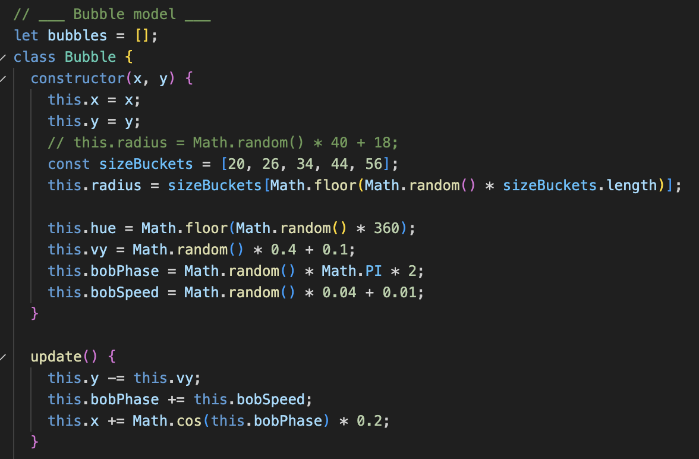
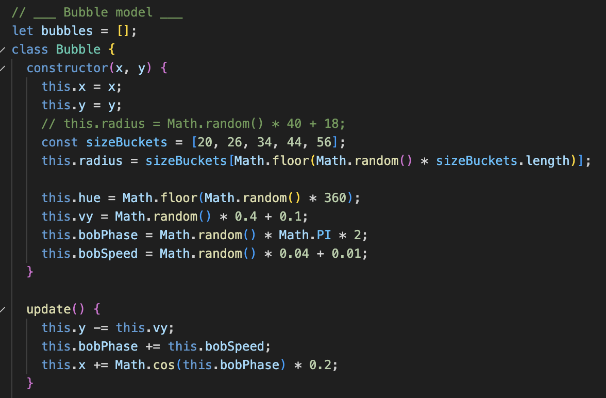
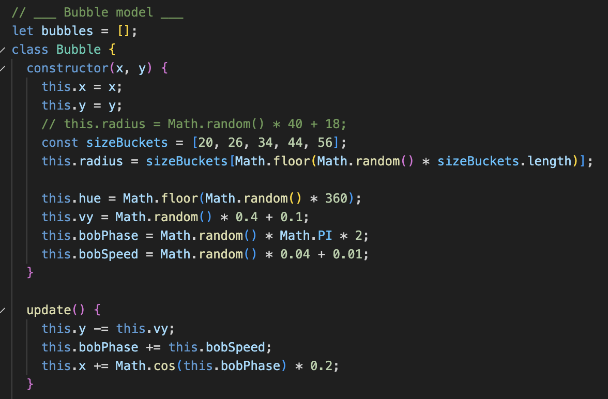

This project is a fun interactive audio-visual webpage. Users can
generate and pop bubbles to generate accompanying sounds. The design
was built based off of the prompts "No text characters" and
"Skeuomorphism", utilising the advanced JavaScript technique
"math.random()".
The initial inspirations derived from soap bars and its transformation
into bubbles, naturally provoking the idea to create a system that
generates bubbles upon clicking.
Design's Guiding Values
01
Skeuomorphic Design
The webpage applies 'Skeuomorphic Design' to the bubbles that are
generated. The, almost, transparent bubbles in various colours with
highlights similarly reflects the aesthetics of bubbles in real
life. Furthermore, the way the bubbles float up and out of the
webpage mimics the movement and actions of bubbles.
02
Playful Design
It is intended that this webpage is just a fun interactive page,
which gives users the freedom to generate and pop bubbles wherever.
However, the randomisation makes it contain restriction and
structure that prevents users from generating the sound, size and
colour to their preference.
03
Learnability
The pop-up at the beginning, upon visiting the webpage, provides a
basic introduction to the website. Overall, it is simple enough for
users to navigate and a page with easy learnability as it only
requires the user to tap around the canvas.
Design Rationale
Feedback
When approaching the feedback of this system, it was very
self-explanatory as a result of approaching the design through the
lens of skeuomorphism. Although in real life, the sounds of bubbles
forming and popping are almost inaudible, the design intentionally
exaggerates these cues to provide clear, immediate feedback to the
user. Each generated bubble is accompanied by a "creation" sound that
confirms the action, while a satisfying "pop" sound follows when the
user clicks on a bubble. This not only enhances the tactile and
playful quality of the interaction but also reinforces a sense of
cause and effect, allowing users to intuitively understand how their
actions influence the system. The use of both auditory and visual
feedback helps make the interface feel responsive, lively, and
immersive, even without relying on textual instructions.
Information Design
In terms of information design, the project intentionally removes
textual elements, relying solely on visual and auditory cues to
communicate interaction possibilities. The layout is very minimal,
with the entire screen acting as the interactive space, immediately
signalling that user engagement happens through clicking rather than
navigating, for example, menus and buttons. However, a button to
change modes exists, a "sun" and "moon" emoji communicates there being
a "day" and "night" mode. The colour palette and sound shifts between
the "day" and "night" mode to communicate environmental context and
mood. Moreover, the randomly generated bubble sizes and hues introduce
a sense of variability. The approach that was taken ensure that all
necessary information, such as interactivity, responsiveness and
atmosphere, is conveyed intuitively through sensory feedback rather
than explicit instruction, despite there being an introductory pop-up.
Mapping
The mapping in this design is direct and intuitive, closely reflecting
real-world cause and effect relationships. A single click anywhere on
the screen generates a bubble, while clicking an existing bubble
causes it to pop. This one-to-one relationship between input and
output makes the interaction easy to understand without instruction,
encouraging playful exploration. The toggle between day and night mode
is similarly straightforward, with immediate visual feedback
reinforcing the user's control over the environment. By maintaining
consistent and predictable mappings, the design ensures users can
quickly grasp the system's logic and engage with it in a natural,
satisfying way.
Learnability
The learnability of this system is extremely high due to its
simplicity and reliance on intuitive, natural interactions. Users can
immediately understand how to engage with the interface through direct
manipulation - clicking anywhere generates a bubble, and clicking
again pops it. The immediate auditory and visual feedback reinforces
these actions, allowing users to grasp the system's logic within
seconds. Because the interface avoids text or complex controls, it
invites experimentation rather than requiring explanation, despite the
explanatory pop-up. Even the day and night toggle can be discovered
through exploration, making the experience playful, accessible and
easy to learn without prior instruction.
Significant Changes + Feedback Adjustments
Following the prototype stage, I made several adjustments to address the
user feedback received and strengthen the overall interactivity.
Bubbles
The most notable change was the introduction of the popping
function. Users are now able to interact with each generated bubble,
rather than passively watching them fade away, as it was in the
initial prototype. This shift made the interface feel more dynamic
and aligned with the playful and tactile associations of real
bubbles.
I also redesigned the sound system, as per feedback, to create
lighter, bouncier tones that better match the visual characteristics
of each bubble. Creating the popping functions also required the
inclusion of appropriate sounds to accompany the popping action.
Furthermore, the feedback suggested confusion over the randomised
sounds, so larger bubbles were associated with a lower pitch and
smaller bubbles were associated with a higher pitch to better fit
user expectations.
To imprement the sound refinements, I structured the audio logic
into two separate functions: playSpawnSound() and playPopSound().
These handle the different sound events. Each function maps the
bubble's size to the pitch which creates a visual-audio link.
Implementing the functions was quite simple however, it required an
excessive amount of trial and error to get the JavaScript to produce
both sounds AND link the sizes accordingly to sounds. I'm still not
sure what the reason was, but fortunately I got it to work in the
end.
Originally, the bubbles were intended to be static on screen with a
reset button to clear the canvas. In the prototype stage, the
floating animation was experimented with to see what users thought.
Through reflection and user testing, it was decided that the
animations would be kept, with slight adjustments. Instead of the
bubbles floating up and fading away into the background, the bubbles
now float, bob side-to-side and disappear from clicks to pop or
naturally from floating. This approach made the interface feel more
natural, as a result of the bubbles feeling more alive and being
slightly more unpredictable, aiding in creating a more engaging user
experience.
Visually, I was able to upgrade the bubbles from the flat, opaque
blue circles by giving each bubble a slightly transparent reflective
form, making them appear as three-dimensional and organic as
possible. This was also combined with randomised colours, to enhance
the unpredictability.
The prototype was executed via CSS, which then developed to be made
on JS, and later iterated to create more realistic bubbles that also
followed the directions of my inspiration. Although I would've loved
to make the bubbles more transparent and rainbow-like (similar to
real-life bubbles) but I had difficulty trying to get it to work. In
hindsight, I feel like it turned out better this way because it
seems more fun and "child-like." The change isn't drastic from the
initial JS to the finalised JS design, however, making it more
"glowy" elevated the overall bubble aesthetic.
Unrelated to the styling of the bubbles, but I used the standard
emojis for the day and night icons because I didn't find it
necessary to find separate icons.
Background
Previously, the prototype included a static black background as the
canvas, but after feedback, it was altered to be an animated CSS
gradient to mimic water-like properties. Although the animation is
very subtle and almost unnoticeable, it better supports the
atmosphere and aids in the immersion.
Although I don't have proof of documentation, I did try to use CSS
to create ripple-like effects, like water, but I was really
unsuccessful. The outcome would almost always turn out to be an
animated pattern, rather than looking like water ripples. It may
have potentially been different if I also experimented with JS, but
I didn't want to bother too much because the background being
animated was just a small detail addition so that it influenced
immersion.
Personally, the initial idea of the webpage felt as though it was
lacking a certain element, influencing the decision to add the
animated background, however there was one more addition to the
design. The biggest conceptual addition was the day and night mode
toggle, which not only changes the background and bubble colours but
also alters the sound palette. The sound palette for the day mode is
lighter and has more of a "popping" property, when bubbles are
generated, whereas the night mode has slightly more muted, deeper
sounds. This gives users a reason to experiment with the interface
longer, highlighting the randomness and visual aesthetics more.
Method
During my research stages, I discovered that the bubbles could be
generated via CSS or JS. In the prototype stage I decided to take
the CSS approach, as it was something I could understand. However, I
quickly realised there were some limitations for the purpose I was
using it for. I ended up having to go back and learn the harder
methods that I was initially avoiding. Alongside this, I was able to
get help with learning and understanding from a friend whose
expertise lies in JS. Below shows the before and after of the JS
page. In the "before," the bubbles were generated via JS but were
styled with CSS, in the after the full bubble design was with JS and
the CSS focused on the background styling.

Although I had to learn a new method in a very short period of time,
I was able to execute it faster than expected due to having briefly
learnt these methods previously, from another project.
Unfortunately, it still required me to trial and error numerous
times as I still needed to get used to the new method. In the end,
I'm very glad I decided to take the more difficult route beause I
don't think I would've been able to achieve the final outcome to the
current standard it is at.
Development Timeline
Week 1
25/08–31/08
Consolidated the core concept idea and conducted initial research
to explore interactive sound design methods. Created the project
repository.
Week 2
01/09–07/09
Began developing the interactive webpage, focusing primarily on
implementing the core JavaScript functions. Tested initial click
interactions. Also focused on researching methods to create the
interactions.
Week 3
08/09–14/09
Added an introductory pop-up to introduce users to the concept.
Refined visual elements, experimenting with color and motion to
improve user engagement.
Week 4
15/09–21/09
Assignment 2 Prototype Due — Collected peer and
tutor feedback. Prioritised key improvements and learned new
JavaScript methods.
Week 5
22/09–28/09
Revised the visual design of the bubbles to achieve a more organic
look. Experimented with different sound elements to align audio
with visual style.
Week 6
29/09–05/10
Introduced day and night mode feature. Mapped bubble size to sound
pitch, linking larger bubbles to lower frequencies and smaller
bubbles to higher ones.
Week 7
06/10–12/10
Finalised and refined the sound design, ensuring tonal balance and
smooth playback.
Week 8
13/10–17/10
Conducted final quality checks across sound, visuals, and
interaction. Ensured overall consistency between aesthetic and
functionality.
Most Proud Of
The visual aesthetic of the project is what I am most proud of.
Although it was challenging to achieve the desired look through
JavaScript, the final result successfully captures the playful and
child-like quality I envisioned. Every element, from the motion of
the bubbles to their varying colours and sizes worked more
cohesively than expected to create a satisfying visual experience.
Additionally, the sound design became one of the most rewarding
aspects of the project. Despite facing significant difficulty when
creating and adjusting the sounds, the final outcome exceeded
expectations. The combination of visual and auditory feedback feels
balanced and immersive, enhancing the overall interaction, to a
higher standard that I was initially anticipating.
Most Challenging
The most challenging part of the design process was learning and
applying different JavaScript methods to achieve both the desired
functionality and aesthetic. Many iterations were needed to
fine-tune how bubbles behaved and interacted with user input.
As it was briefly mentioned, sound manipulation also posed a major
challenge - specifically, aligning the pitch with bubble size so
that larger bubbles produced lower tones and smaller ones created
higher tones. Often times, the sound would still come out to be
randomised and it required a lot of trial and error. Occasionally,
if the sizes were correctly matched with the sounds, the actual
soundscape of the bubbles would turn out to be different to what was
expected.
Looking Further
If I had more time to continue developing the project, I would have
liked to explore adding more user-controlled options to expand
interactivity. This could include a toggle to choose between static
and dynamic bubble movement, giving users more control over how the
bubbles behave on screen. I would also introduce settings that allow
users to switch between random or controlled bubble generation,
letting them decide whether bubble sizes are entirely randomised or
follow specific parameters. Additionally, I would experiment with
non-circular bubble shapes to create a more visually diverse and
playful experience, pushing the aesthetic beyond traditional bubble
forms.


 
